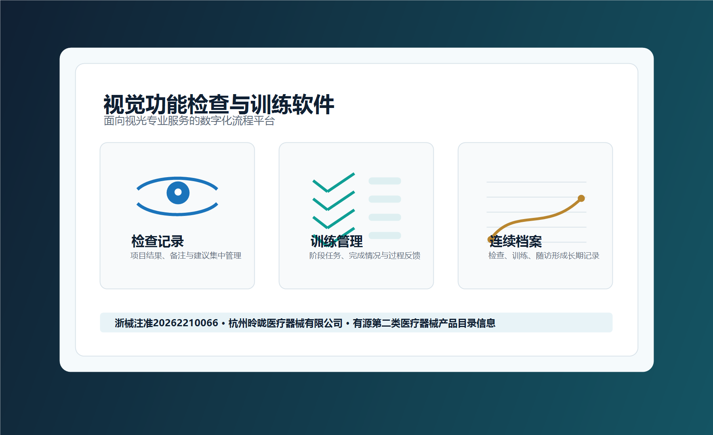

儿童视觉健康数字化解决方案
产品围绕“筛查-评估-训练-管理”构建完整闭环，既可用于院内快速筛查与专项检查，也可用于训练方案生成、院内训练、家庭训练和阶段性复查管理。
Product Introduction
面向儿童视觉健康服务场景，融合视功能检查、训练方案生成、院内/家庭训练、患者管理与数据追踪能力，帮助专业机构建立标准化、持续化、可视化的儿童视功能服务体系。
Product Background
产品方案资料指出，斜弱视、近视伴视功能异常、融合功能不足、视疲劳等问题，在儿童视觉健康服务中具有较高的专业管理需求。3-12 岁是儿童视觉发育和干预管理的重要阶段，早筛查、早发现、早评估、早管理，对儿童长期视觉质量具有重要意义。
传统服务中，检查工具、训练工具、患者档案和家庭配合往往分散在不同环节，医生难以持续掌握训练完成情况，家长也难以及时理解孩子的训练进度。昤昽医疗的“视觉功能检查与训练软件”正是围绕这一痛点，构建从检查到训练、从院内到家庭、从单次结果到长期追踪的数字化工作平台。
产品围绕“筛查-评估-训练-管理”构建完整闭环，既可用于院内快速筛查与专项检查，也可用于训练方案生成、院内训练、家庭训练和阶段性复查管理。
训练方案生成后，患者可在院进行即时训练，也可在家进行远程训练，训练数据同步至云端，减少高频往返医院的负担。
医生端用于患者信息管理、训练计划查看与数据追踪；家长端用于了解孩子训练进度、未完成训练任务及后续训练安排。

Core Modules
支持快速筛查与全项目检查。检查项目覆盖调节灵敏度、眼位检查、知觉眼位检查、抑制度检查、聚散范围、聚散灵敏度、立体视检查、信噪比检查、不等像检查、追随检查、双眼视平衡、扫视检查、色觉检查、对比敏感度、动态随机立体视、周边大范围立体视等内容。
检查报告生成后，可由系统形成推荐训练方案，医生可在此基础上结合患者年龄、检查结果、训练依从性和阶段变化进行修订，形成更贴合个体情况的训练安排。
支持患者档案管理、用户卡片、标签分类和数据看板，医生可查看本月患者就诊情况、每日训练信息、患者来源和患者类型，便于机构进行精细化管理。
每次训练与复查数据持续记录，形成患者视功能变化的连续档案，帮助医生及时了解阶段变化，并据此调整下一阶段训练计划。
System Value
产品不是单一检查模块，也不是单一训练模块，而是把检查、报告、方案、训练、家庭协同、数据追踪、复查调整整合到同一服务链路中，让机构可以围绕儿童视觉健康建立更完整的服务产品。
医生可通过 PC 端和医生端小程序进行患者信息管理、训练数据查看、方案调整和阶段复盘，减少手工记录与分散沟通成本。
家长端用于查看孩子训练进度、未完成训练任务和后续训练安排，提升家庭配合效率，帮助训练从院内延伸到家庭。
机构可基于标准流程开展筛查、评估、训练和随访管理，把儿童视觉健康服务从一次性接诊转化为长期可追踪服务。